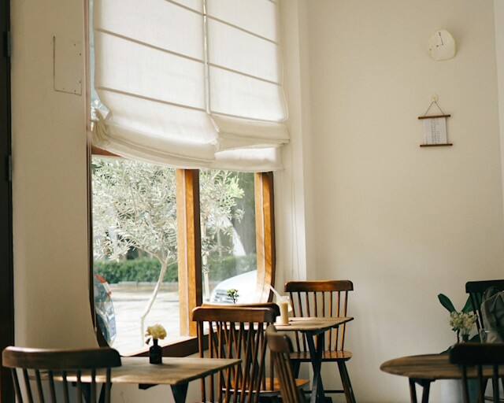

Restaurang
Restaurangen serverar frukost, lunch, och afternoon tea och har ordinarie stängt på kvällarna. För hotellgäster är det möjligt att boka middag om de vill äta på kvällen.

Restaurangen serverar frukost, lunch, och afternoon tea och har ordinarie stängt på kvällarna. För hotellgäster är det möjligt att boka middag om de vill äta på kvällen.